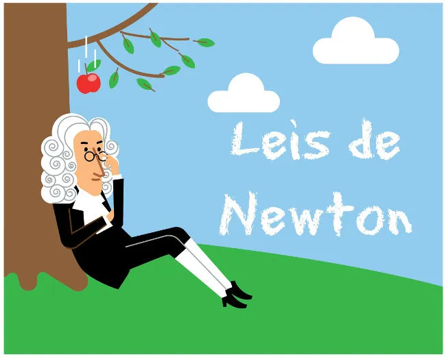

Leis de Newton
Conhecimento Fundamental
Qual das seguintes opções é o nome da Primeira Lei de Newton?
A Segunda Lei de Newton relaciona qual grandeza física com a força aplicada a um objeto?
De acordo com a Terceira Lei de Newton, como as ações e reações se relacionam?
QQual é a unidade de medida da força no Sistema Internacional de Unidades (SI)?
Qual das Leis de Newton está relacionada à famosa fórmula F = m * a?
De acordo com a Primeira Lei de Newton, o que acontece a um objeto em repouso se nenhuma força externa atuar sobre ele?
A Primeira Lei de Newton é frequentemente chamada de "Lei da Inércia". O que significa "inércia"?
Qual é o nome do cientista que formulou as Leis de Newton?
Quem foi o primeiro homem a pisar na Lua?
Se você empurrar uma caixa de 10 kg com uma força de 20 N, qual será a aceleração da caixa de acordo com a Segunda Lei de Newton?
De acordo com a Terceira Lei de Newton, se você empurrar uma parede com uma certa força, qual é a ação e qual é a reação?
Qual é o nome da Terceira Lei de Newton?
E Qual das seguintes afirmações sobre a Primeira Lei de Newton está correta?